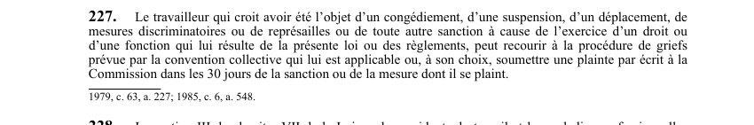

art-227-LSST : plainte pour représailles
Un article du wiki ⚖️ Recueil législatif
🌐 LegisQuébec · 📄 PDF officiel (page 67)
Texte officiel : capture du PDF

🔗 Ouvrir a cette page : LSST.pdf : page 67 · texte a jour au 26 mars 2024
En bref
Le travailleur qui croit avoir été l'objet de représailles. Cette obligation vise le travailleur.
- 30 jours ou recourir à la procédure de griefs prévue par la convention collective.
- Dans les 30 jours de la sanction ou de la mesure.
Voir aussi
- art. 225 : pouvoir supplétif du gouvernement · faculté : le gouvernement peut adopter lui-même un règlement si la Commission ne l'adopte pas dans un délai jugé raisonnable, après publication à la Gazette officielle du Québec avec un délai de 60 jours avant adoption définitive.
- art. 226 : disposition abrogée · disposition-abrogee-226.
- art. 228 : procédure applicable aux plaintes · faculté : la section III du chapitre VII de la LATMP s'applique aux plaintes soumises en vertu de l'article 227 ; la décision de la Commission peut être contestée devant le Tribunal administratif du travail.
- art. 228.1 : contribution au Fonds du Tribunal · procédure : la Commission contribue au Fonds du Tribunal administratif du travail pour couvrir les dépenses engagées relativement aux recours instruits devant lui en vertu de la présente loi.
- ↑ Loi : LSST
Pages qui pointent ici (11)
- art-225-LSST, réglementation Recueil législatif
- art-226-LSST, comité plurietablissement Recueil législatif
- art-228-LSST, section iii chapitre vii Recueil législatif
- art-228.1-LSST, Commission Recueil législatif
- CNESST Recueil législatif
- Constat d'infraction Droit du travail
- Démarrage rapide - Travailleur Recueil législatif
- LSST Recueil législatif
- LSST - Chapitre VIII - Pénalités et infractions Recueil législatif
- LSST partie 2 Sécurité industrielle
- TAT Recueil législatif